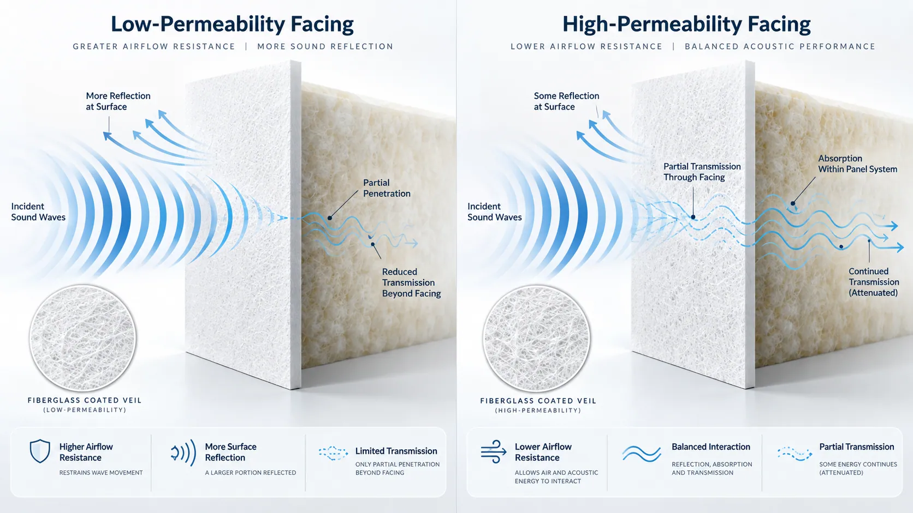
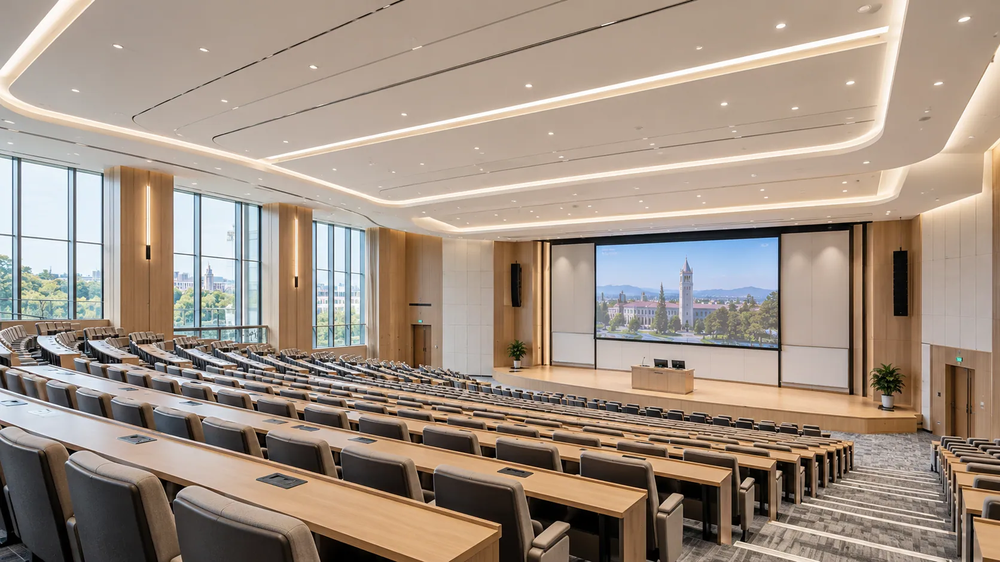
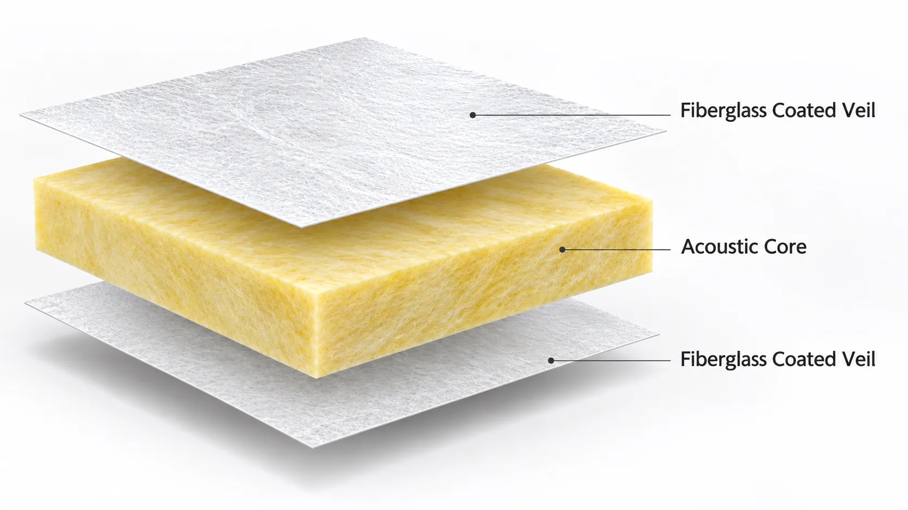
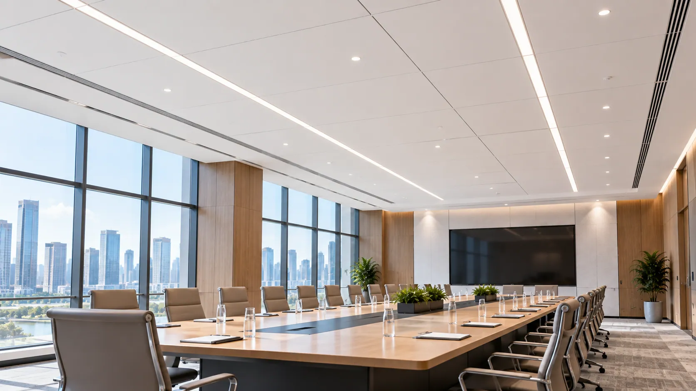
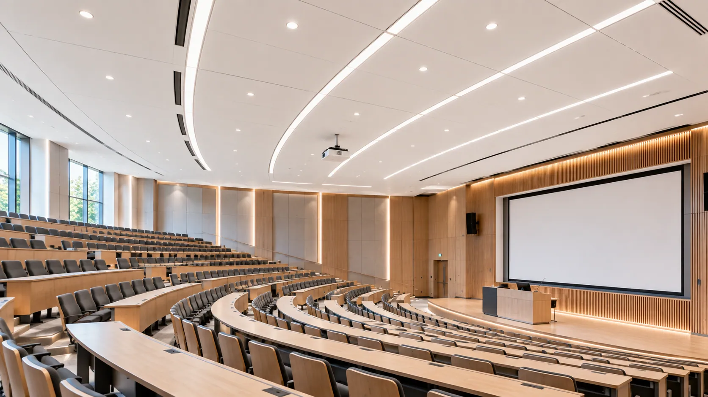
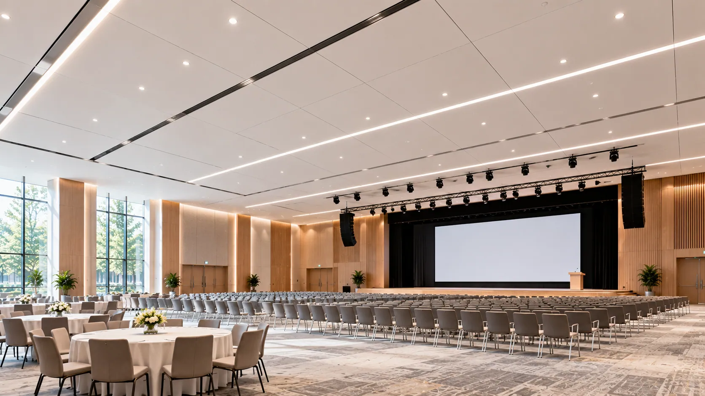
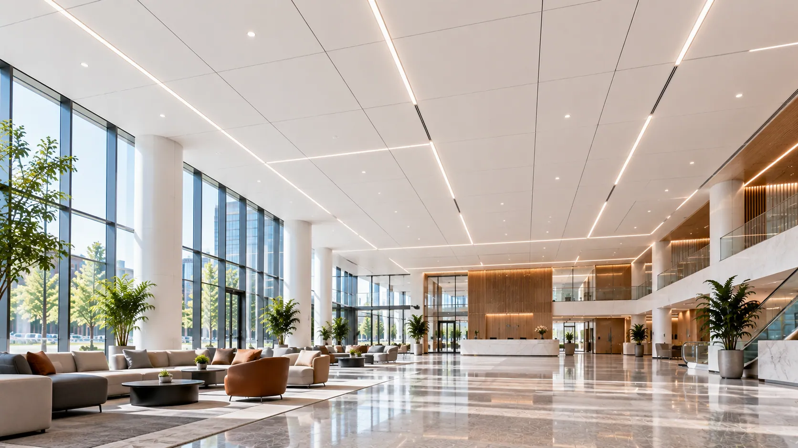

01 — Insufficient Useful Reflection
Highly absorptive ceiling constructions may reduce early reflected sound that could otherwise contribute to speech reinforcement in suitable room designs.
01 — HERO BANNER
Eyebrow: SOUND-REFLECTIVE ACOUSTIC FACING SOLUTIONS
Control Sound Reflection. Support Speech Clarity.
A low-permeability facing designed for acoustically balanced ceiling systems.
GRECHO Low-Air-Permeability Fiberglass Coated Veil combines an engineered coating structure with a dimensionally stable fiberglass substrate to provide controlled airflow resistance, consistent surface quality, and reliable processing.
Designed for acoustic ceiling panels used in large meeting rooms, conference halls, auditoriums, and spacious interiors where controlled sound reflection is part of the acoustic design.
Key Highlights
Required 01 — HERO BANNER / Low-Air-Permeability Fiberglass Coated Veil.
The supplied image is not used in this slot.
02 — ACOUSTIC DESIGN CHALLENGES
Eyebrow: SOUND DISTRIBUTION MATTERS
A large room needs more than sound absorption. It needs balanced sound distribution.
In conference halls, lecture rooms, and spacious meeting areas, speech must reach listeners across different distances.
Excessive sound absorption in certain areas may reduce useful reflected sound, while uncontrolled reflections can create echoes and reduce speech intelligibility.
Ceiling surface characteristics are one of the factors influencing this acoustic balance.
Four considerations matter when selecting an acoustic ceiling facing.
Highly absorptive ceiling constructions may reduce early reflected sound that could otherwise contribute to speech reinforcement in suitable room designs.
Room geometry and ceiling configuration may create differences in sound levels between seating areas.
Excessive or delayed reflections can increase reverberation and make spoken words harder to distinguish.
A highly permeable facing may allow more sound energy to interact with the underlying absorptive core than intended in ceiling areas designed to provide reflection.

Selecting the right facing helps manufacturers develop ceiling panels with acoustic characteristics suited to the intended room design.
03 — GRECHO SOLUTIONS
Eyebrow: ENGINEERED FOR SOUND CONTROL
The right facing helps shape how sound interacts with the ceiling.
GRECHO Low-Air-Permeability Fiberglass Coated Veil provides selectable airflow resistance for ceiling panel manufacturers developing sound-reflective or acoustically balanced systems.
A controlled coating structure reduces airflow through the facing compared with higher-permeability grades, influencing the acoustic interaction between the surface and underlying core.
Higher facing airflow resistance can help increase surface reflection in suitable panel constructions, supporting the design of ceiling areas intended to provide useful reflected sound.
Uniform coating distribution helps maintain consistent surface appearance and material characteristics across finished ceiling panels.
A dimensionally stable fiberglass veil supports reliable handling, lamination, cutting, and conversion during ceiling panel manufacturing.
04 — AIR PERMEABILITY OPTIONS
Eyebrow: FIND THE RIGHT ACOUSTIC BALANCE
The facing influences the balance between sound reflection and absorption.
GRECHO offers fiberglass coated veil options with selectable airflow characteristics, allowing manufacturers to evaluate different acoustic responses for ceiling panel systems.
Designed for Sound-Absorbing Panels.
Features a relatively open coating structure that allows greater airflow through the facing.
Suitable for acoustic panel constructions designed to encourage sound interaction with porous mineral wool or glass wool cores.
Best For: Sound-absorbing acoustic ceiling and wall panels.
Application context only. Material grade and performance are not established by this image.
Designed for Flexible Acoustic Requirements.
Provides an intermediate level of airflow resistance to help manufacturers evaluate different combinations of surface coverage, reflection, and absorption.
Best For: Acoustic ceiling systems requiring a balance of sound absorption and reflection.
Application context only. Material grade and performance are not established by this image.

Designed for Sound-Reflective Ceiling Applications.
Features an engineered coating structure with reduced air permeability and higher airflow resistance.
Supports the development of ceiling panels where greater surface reflection is desired as part of the overall acoustic design.
Best For: Large meeting rooms, conference halls, auditoriums, and selected reflective ceiling zones.
Application context only. Material grade and performance are not established by this image.
From sound-absorbing surfaces to more reflective ceiling designs, GRECHO helps manufacturers select facing materials according to airflow characteristics, acoustic core construction, and intended room performance.
05 — KEY ADVANTAGES
Eyebrow: MATERIAL PERFORMANCE
Four material characteristics that matter in sound-reflective ceiling panel development.
Low air permeability supports facing configurations that can increase sound reflection in suitable acoustic panel systems.
Different coating structures allow manufacturers to evaluate facing characteristics according to their reflection and absorption requirements.
A controlled coating process provides a uniform decorative surface suitable for large ceiling installations.
The stable fiberglass structure supports consistent lamination, cutting, and conversion into finished ceiling panels.
Control the Facing. Shape the Acoustic Response.
06 — PRODUCT STRUCTURE
Eyebrow: HOW IT WORKS
The facing helps determine how much sound interacts with the material beneath it.
GRECHO Low-Air-Permeability Fiberglass Coated Veil is designed for integration with suitable acoustic ceiling panel cores.
Its engineered coating provides higher airflow resistance than more open facing structures, influencing the acoustic response of the finished panel.

A lightweight, dimensionally stable fiberglass veil combined with a controlled coating structure.
Designed to provide reduced air permeability, consistent surface coverage, and reliable manufacturing characteristics.
Mineral wool or glass wool provides the underlying panel structure and contributes to the acoustic behavior of the complete ceiling system.
Depending on the facing characteristics, sound interaction with the porous core can be influenced.
The facing, acoustic core, panel thickness, mounting arrangement, and ceiling geometry should be evaluated together to achieve the intended balance of reflection and absorption.
07 — PRODUCT SELECTION
Eyebrow: FIND YOUR ACOUSTIC SOLUTION
Different interior spaces require different acoustic responses.
GRECHO supports facing selection according to ceiling panel construction, airflow resistance, surface requirements, and acoustic design targets.
For Mixed Acoustic Requirements
A fiberglass coated veil with intermediate airflow characteristics for ceiling panels requiring a balance between absorption and reflection.
Best For: General commercial interiors and multi-purpose acoustic ceilings.
For Reflective Ceiling Designs
An engineered facing with reduced air permeability for applications where increased ceiling surface reflection is desirable.
Best For: Large meeting rooms, lecture halls, and selected sound-reflective ceiling areas.
For Project-Specific Acoustic Targets
A customizable fiberglass coated veil solution with selected coating coverage and airflow resistance characteristics.
Best For: Acoustic panel manufacturers developing ceiling systems for defined reflection, absorption, or speech clarity requirements.
08 — TECHNICAL SPECIFICATIONS
Eyebrow: TECHNICAL INFORMATION
Select the facing characteristics that match your ceiling panel structure and intended acoustic response.
| Parameter | Specification |
|---|---|
| Product | Low-Air-Permeability Fiberglass Coated Veil |
| Base Material | Fiberglass Veil |
| Surface Treatment | Low-Permeability Coating |
| Color | White / Customizable |
| Surface Finish | Fine, Uniform Texture |
| Basis Weight | Grade-Dependent / Customizable |
| Roll Width | Customizable |
| Air Permeability | Low / Selectable by Grade |
| Airflow Resistance | Higher-Resistance Grades Available |
| Coating Coverage | Grade-Dependent / Customizable |
| Dimensional Stability | Fiberglass-Based Structure |
| Compatible Core | Mineral Wool / Glass Wool |
| Acoustic Response | Finished-Panel Dependent |
| Supply Form | Rolls |
| Customization | Width, Weight, Coating & Airflow Resistance |
Technical specifications, airflow resistance, reflection characteristics, and acoustic performance vary by product grade and finished-panel construction. Testing is required to establish actual acoustic performance.
09 — APPLICATIONS
Eyebrow: APPLICATIONS
Controlled sound reflection can contribute to effective acoustic design in large and spacious interiors.
GRECHO Low-Air-Permeability Fiberglass Coated Veil supports ceiling panel manufacturers developing products for acoustically demanding spaces.

Support Speech Across the Room.
Large conference rooms require carefully designed sound distribution so speech can reach listeners in different seating areas.
Low-permeability fiberglass facing can be used in selected ceiling constructions where reflected sound is part of the acoustic strategy.
Combined with suitable sound-absorbing surfaces elsewhere, reflective ceiling zones may help reinforce speech without excessive reverberation.
Key Requirements: Useful Sound Reflection · Speech Clarity · Acoustic Balance
Application context only. Material grade and performance are not established by this image.

Help Spoken Words Reach the Audience.
Lecture halls and auditoriums require acoustic designs that support the transmission of speech over greater distances.
Low-permeability facing materials can be evaluated for ceiling panels intended to provide selected reflection characteristics.
Appropriate ceiling geometry and complementary absorption are essential for achieving the desired acoustic response.
Key Requirements: Sound Distribution · Reflection Control · Room Acoustic Compatibility
Application context only. Material grade and performance are not established by this image.

Flexible Acoustic Solutions for Large Spaces.
Multi-purpose halls may host conferences, presentations, performances, and public events.
Different ceiling zones can be designed with reflective and absorptive characteristics according to the activities and acoustic targets.
GRECHO offers selectable facing permeability to support the development of different acoustic panel configurations.
Key Requirements: Acoustic Flexibility · Controlled Reflection · Surface Consistency
Application context only. Material grade and performance are not established by this image.

Acoustic Balance for Open Environments.
Large public spaces and commercial interiors require careful coordination of reflection, absorption, and room geometry.
Low-permeability acoustic facing can be evaluated as part of ceiling panel systems designed to achieve the intended acoustic distribution.
Key Requirements: Acoustic Balance · Architectural Integration · Material Stability
Application context only. Material grade and performance are not established by this image.
10 — SAMPLE & PRODUCTION VALIDATION
Eyebrow: FROM SAMPLE TO PRODUCTION
The right acoustic response should be confirmed through panel and room-level evaluation.
Different ceiling manufacturers use different core materials, coatings, panel thicknesses, and mounting configurations.
GRECHO supports facing selection through a structured material evaluation process.
Share your acoustic core material, panel dimensions, preferred airflow characteristics, and intended room application.
Evaluate coating uniformity, surface texture, permeability levels, and relevant material properties.
Test the facing with your ceiling panel construction and lamination process.
Evaluate finished-panel sound absorption and reflection behavior using suitable acoustic testing methods.
Finalize the facing grade, roll dimensions, coating characteristics, airflow resistance, and other technical requirements.
Our goal is to help ceiling manufacturers select facing materials that support their intended panel characteristics and acoustic design requirements.
11 — FREQUENTLY ASKED QUESTIONS
Eyebrow: FAQ
It is a lightweight fiberglass veil with an engineered coating designed to provide relatively low air permeability and higher airflow resistance.
It can be evaluated as a facing material for ceiling panels requiring specific sound reflection characteristics.
A facing with higher airflow resistance can change the acoustic impedance of the panel surface, influencing how much sound is reflected or absorbed.
The actual acoustic response depends on the facing, underlying core, frequency, and complete panel construction.
It can be considered for selected ceiling areas where controlled sound reflection is required.
Speech clarity depends on the entire room design, including reflection timing, ceiling geometry, reverberation, background noise, and sound absorption elsewhere.
No. Excessive reflection can increase reverberation or create echoes, reducing speech intelligibility.
The facing should be selected according to the room's acoustic design rather than permeability alone.
High-permeability facing generally allows greater acoustic interaction with the underlying porous sound-absorbing core.
Low-permeability facing introduces greater airflow resistance and can promote a more reflective surface response in suitable panel constructions.
Different facing coating structures and properties can be evaluated according to the intended acoustic response and manufacturing requirements.
Available permeability grades should be confirmed with GRECHO.
Low-permeability fiberglass coated veil can be evaluated for compatibility with suitable mineral wool and glass wool panel systems.
Final suitability depends on the core, adhesive system, and production process.
Yes. Share your panel structure, intended application, and technical requirements with GRECHO to discuss suitable facing samples and evaluation options.
12 — FINAL CTA
Eyebrow: LET'S FIND YOUR SOLUTION
Controlled Airflow. Purposeful Reflection. More Acoustic Design Possibilities.
Whether your priority is increasing useful sound reflection, selecting the right airflow resistance, achieving consistent ceiling appearance, or developing a balanced acoustic panel system, GRECHO can help you evaluate a suitable fiberglass facing solution.
Tell us about your ceiling panel structure, intended room application, and acoustic performance requirements.
GRECHO — Fiberglass Facing Solutions for Better Building Materials.